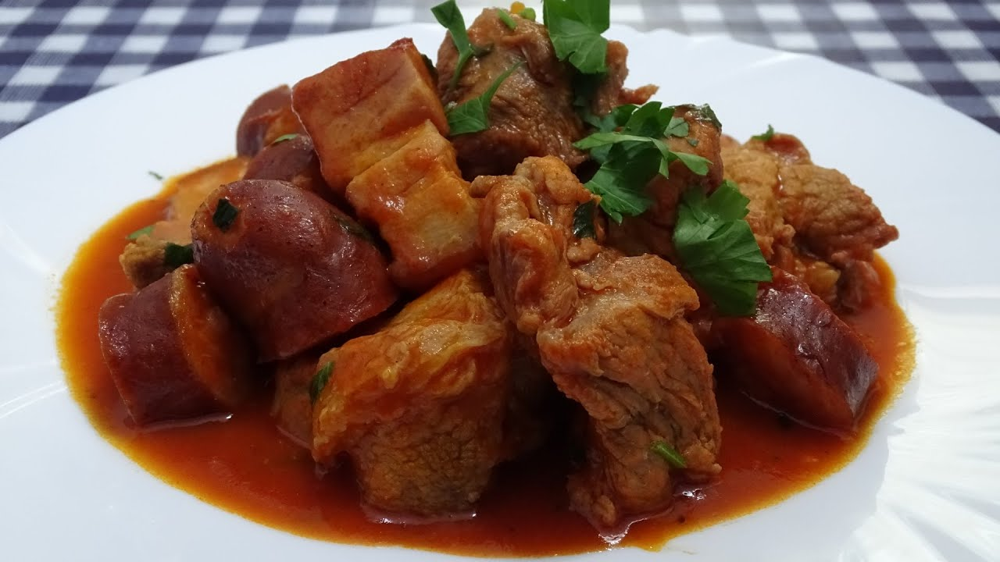

Inicio
Pollo
Carne
Pescado
Vegetales
Receta de Carne
Una carne jugosa y llena de sabor
Carne Guisada

Ingredientes
500g de carne de res
1 cebolla
2 tomates
Sal y especias al gusto
Preparación
Cortar la carne en trozos.
Sofreír cebolla y tomate.
Añadir la carne y cocinar a fuego lento.